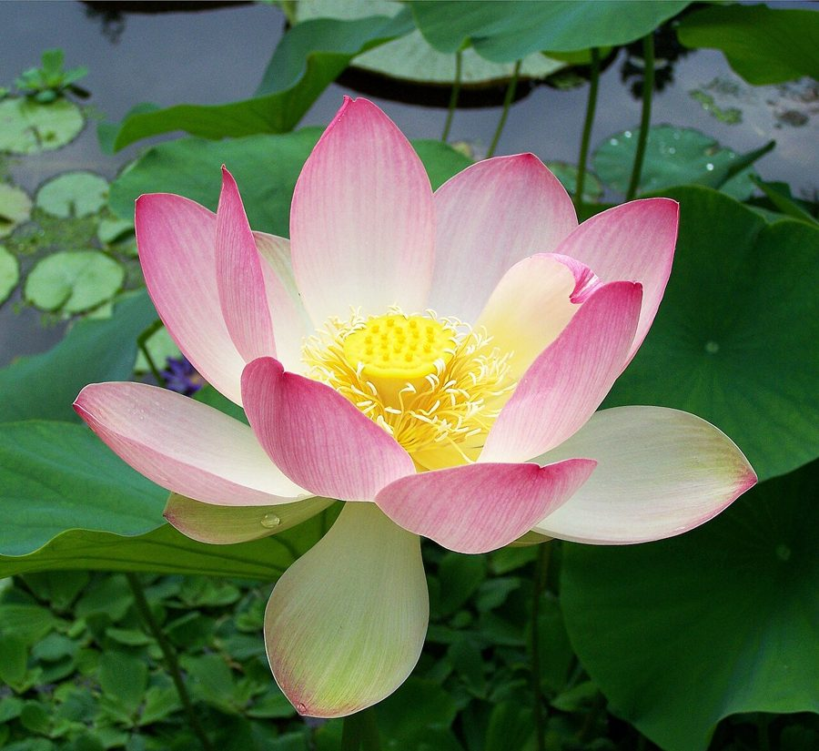

कमलIndian Lotus
Nelumbo nucifera · Nelumbonaceae · FLR-0005

- Scientific name
- Nelumbo nucifera Gaertn.
- Family
- Nelumbonaceae
- Hindi
- कमल / पद्म
- Status here
- native
- IUCN
- LC
When to look कब देखें
Present all year.
कमल / Indian Lotus
Nelumbo nucifera Gaertn. — Nelumbonaceae
कमल — धन की देवी लक्ष्मी का पावन आसन, रसोई में ज़ायकेदार कमल ककड़ी का स्रोत, और एक ऐसा अनोखा फूल जो ठंडी सुबहों में भी अपने भीतर ताप पैदा करता है ताकि परागणकर्ता भृंग और मक्खियाँ इसकी ओर आकर्षित हो सकें। यह भारतीय संस्कृति का सबसे पवित्र प्रतीक होने के साथ-साथ अत्यंत पौष्टिक खाद्य सामग्री और वानस्पतिक आश्चर्यों का एक बेजोड़ मेल है।
Quick Identification त्वरित पहचान
| Feature | Description |
|---|---|
| Leaves | Large, round (30–80 cm across), held well above the water on tall stalks; peltate (attached at center) |
| Leaf Surface | Hydrophobic ("lotus effect") where water beads up and rolls off, keeping the leaf dry and clean |
| Flowers | Large (15–25 cm across), fragrant, with 20–25 pink or white tepals and a central yellow receptacle |
| Seed Pod | Flat-topped, cone-shaped green receptacle (kamal gatta) containing multiple seed cavities |
| Rhizome | Long, segmented, cylindrical tubers (kamal kakdi) growing in mud, with ringed air channels inside |
| Habitat | Perennial standing water bodies like ponds, lakes, oxbow lakes, and temple tanks |
Field tip: Unlike water lilies whose leaves float flat on the water surface and are notched, Lotus leaves are held high above the water on tall green stalks. The hydrophobic leaves where water beads run like mercury are a definitive field sign.
Morphology आकारिकी
Biometrics (typical measurements in the Gangetic plain):
| Feature | Measurement |
|---|---|
| Leaf diameter | 30–80 cm |
| Flower diameter | 15–25 cm |
| Petiole (leaf stalk) length | 1.0–2.0 m |
| Rhizome segment length | 10–25 cm |
| Rhizome diameter | 3–6 cm |
Rhizome: Long, branched, cylindrical, segmented, growing horizontally in pond mud. Cross-section shows characteristic ring of air channels (lacunae) — these are the "holes" visible when kamal kakdi is sliced. The air channels supply oxygen to the buried rhizome from the leaves above.
Leaves: Large peltate (stalk attached to leaf centre, not edge), round, 30–80 cm diameter. Surface waxy, deeply hydrophobic. Stalks (petioles) hollow, up to 1.5–2 m long, lifting the leaf well above water.
The lotus effect: Leaf surface is covered with microscopic wax-coated bumps (papillae). Water droplets cannot penetrate the spaces between bumps and instead roll off as spheres, picking up dust as they go. This self-cleaning mechanism keeps the leaf clean and disease-free. The phenomenon is studied for biomimetic surface design.
Flowers: Solitary, on stout stalks rising above the leaves. 15–25 cm across. Many tepals (20–25), often pink, sometimes white, rarely deep red. Strongly fragrant.
Receptacle: The flower centre is a flat-topped, fleshy structure (the "lotus seedpod"). After petals fall, it enlarges, dries, and becomes the iconic showerhead-like seedpod (कमल गट्टा).
Seeds: 10–20 per pod, hard-coated, dark brown when ripe, embedded in cavities on the flat top of the receptacle. Edible. Extraordinary longevity — viable for centuries to over 1,000 years in dry storage.
Roots: Fibrous, anchoring the rhizome to pond mud.
हिंदी: जड़ (rhizome) में हवा के नली होती हैं — इसीलिए कमल ककड़ी काटने पर छेद दिखते हैं। पत्ती पर पानी टिकता नहीं — यह "lotus effect" है जिसे विज्ञानियों ने तकनीक में उपयोग किया है।
The Lotus's Self-Heating Flower कमल का स्व-तापन फूल
This is one of the most extraordinary plant facts in biology, and almost no one outside specialist circles knows it.
The lotus flower is thermogenic — it generates its own heat. Over the 2–4 days the flower is open, the receptacle (central seedpod) maintains a temperature of 30–36°C even when ambient air is 10–20°C. The temperature is precisely regulated, not just elevated — the flower behaves like a warm-blooded animal in this respect.
Why? Pollinators in cool dawn temperatures (especially scarab beetles, which arrive at dawn) need warmth to fly and to feed. By offering a warm refuge inside the flower, the lotus attracts and rewards its primary pollinators. Beetles often spend the cool night inside the closed flower, pollinating it as they move.
How? The receptacle has high rates of mitochondrial respiration — cells burn sugar to generate heat (the same process that warms a hibernating animal). This is one of only a handful of plants known to do this; others include skunk cabbage and some arum lilies.
हिंदी: कमल का फूल अपने अंदर 30 से 35°C तापमान बनाए रखता है — चाहे बाहर 10°C ही क्यों न हो।
ऐसा यह इसलिए करता है कि भृंग (beetles) ठंडी सुबह में फूल के अंदर आ सकें। यह दुनिया के कुछ ही पौधों में होता है।
Ecological Role पारिस्थितिक भूमिका
Habitat creator: A lotus-covered pond is a completely different habitat from open water. The huge leaves provide shade, perches, and cover for fish, frogs, and aquatic insects below. Pond herons (BRD-0004) use lotus leaves as ambush perches. Frogs sit on emergent stalks. Damselflies and dragonflies use the leaves for emergence and resting.
Food source:
- Seeds eaten by waterfowl, fish, and humans
- Leaves grazed by aquatic herbivores
- Rhizomes eaten by wild boar, occasionally otters
- Flowers attract bees, beetles, and flies for pollen and nectar
Pollinator support: Large bees (carpenter bees, Xylocopa), scarab beetles, and flies visit lotus flowers. The thermogenic heating makes lotus a uniquely rewarding flower for cool-morning pollinators.
Water-quality engineer: Lotus rhizomes and roots harbour bacteria that process nutrients in the pond sediment. Lotus-rich ponds tend to have clearer water and lower algal blooms than open ponds (when not in excess).
Sediment stabiliser: The rhizome mat binds pond sediment, reducing turbidity from disturbance.
Prey for many species: Lotus seed-pods are eaten by waterfowl. Young leaves are grazed by snails (Pila globosa — the apple snail).
हिंदी: कमल वाला तालाब एक नया पारिस्थितिक तंत्र बनाता है।
मछली, मेंढक, और कीड़े इसके नीचे रहते हैं। बगुला इसकी पत्ती पर बैठकर शिकार करता है।
कमल का बीज पक्षियों का भोजन है। यह तालाब के पानी को भी साफ रखता है।
Life Cycle / Phenology जीवन चक्र
- Perennial: Rhizome persists year-round in pond mud
- Spring (March–April): New leaves emerge from rhizome buds; first leaves may float, later ones rise above water
- Summer to early monsoon (May–June): Leaf canopy reaches full size; first flower buds appear
- Monsoon to post-monsoon (June–October): Peak flowering; each flower open 2–4 days; sequential flowering means flowers visible for 3–4 months
- Post-monsoon (October–December): Seedpods mature, dry, and shed seeds; leaves yellow and die back
- Winter (December–February): Aerial parts die; rhizome dormant in mud
- Seeds: Viable for decades to centuries with intact hard coat — Chinese researchers have germinated 1,300-year-old lotus seeds
हिंदी: जड़ साल भर तालाब की मिट्टी में रहती है।
पत्तियाँ मार्च-अप्रैल में निकलती हैं।
मानसून में फूल — हर फूल 2 से 4 दिन खिलता है।
बीज सैकड़ों वर्षों तक उगने की क्षमता बनाए रखते हैं।
Edible and Medicinal Uses खाद्य और औषधीय उपयोग
| Plant Part | Use | Hindi |
|---|---|---|
| Rhizome (lotus stem) | Sliced for curry, pakoda, bhujiya | कमल ककड़ी की सब्ज़ी |
| Seeds (fresh) | Eaten raw, sweet and crunchy | कमल गट्टा |
| Seeds (dried, popped) | Roasted as a snack | भुना कमल गट्टा |
| Leaves | Plates for food (traditional Asian use, less common in UP) | पत्तल |
| Flower petals | Garlands, religious offerings | पूजा में अर्पण |
| Stamen | Tea, traditional preparations | केसर जैसा उपयोग |
Ayurveda: Lotus is described in classical texts as cooling, mildly astringent, beneficial for the heart, and useful in fevers, diarrhoea, and skin conditions. Different parts have different uses.
Modern nutrition: Lotus stems are low in calories, high in fibre, vitamin C, potassium, and several B vitamins. Seeds are rich in protein and contain neferine (studied for cardiovascular effects).
हिंदी — कमल ककड़ी: पूर्वी UP में लोकप्रिय सब्ज़ी — विशेषकर शादी-ब्याह में। पतले छल्ले काटकर मसालेदार बनाई जाती है।
Cultural and Religious Significance सांस्कृतिक और धार्मिक महत्व
- Lakshmi: Goddess of wealth depicted seated on a lotus
- Brahma: Born from a lotus rising from Vishnu's navel (Bhagavata Purana)
- Saraswati: Depicted holding a lotus
- Buddha: Born on a lotus; many depictions show Buddha seated on a lotus throne
- Symbol of detachment: The plant grows in mud and dirty water but the flower remains pure and clean — a powerful philosophical metaphor in Hindu, Buddhist, and Jain traditions
- National flower of India (and of Vietnam)
- Padma Bhushan / Padma Vibhushan / Padma Shri — India's civilian honours named after the lotus
- Sanskrit literature: Hundreds of names — कमल, पद्म, पंकज ("born from mud"), जलज ("born from water"), नीरज, सरोज, अब्ज
- Folk medicine: Lotus seeds used in vrat (fasting) foods because they are considered pure
हिंदी: कमल कीचड़ में उगता है लेकिन शुद्ध रहता है — यह भारतीय दर्शन का सबसे प्रिय रूपक है।
लक्ष्मी, ब्रह्मा, सरस्वती, और बुद्ध — सभी कमल पर आसीन।
भारत का राष्ट्रीय पुष्प।
Expected Locally स्थानीय रूप से अपेक्षित
Not a field record. Written from published accounts for eastern Uttar Pradesh. No confirmed local sighting yet — if you have seen it, that is what the atlas needs.
अभी तक स्थानीय पुष्टि नहीं। यह विवरण प्रकाशित स्रोतों से है, किसी अवलोकन से नहीं।
Common throughout the wetlands, natural lakes, and pond systems of Basti district. Large flowering displays are highly visible in local oxbow lakes (chaurs) during the monsoon and post-monsoon seasons. Fresh lotus stems (kamal kakdi) are routinely harvested by local communities and sold in Basti markets as a popular vegetable during late autumn and winter.
Distribution वितरण
Global range: Native to tropical and subtropical regions of Asia and northern Australia, stretching from the Middle East through India to Southeast Asia, China, Japan, and Australia.
In India: Widespread across almost all states and union territories, occurring in lowland wetlands, ponds, and river floodplains.
In Uttar Pradesh: Extremely common across the state, present in village ponds, temple tanks, and natural wetlands in all districts.
In Basti district / eastern UP: Highly common in wetlands, oxbow lakes (chaurs), and perennial ponds throughout the rural areas of Basti.
Range notes: No significant range changes documented.
Research Questions शोध प्रश्न
Anyone can investigate these | कोई भी इन प्रश्नों की जाँच कर सकता है
- Which ponds in your village still have lotus? / आपके गाँव में किन तालाबों में कमल अब भी है? — Map them. Compare with what elders remember. Lotus is declining across UP due to pond conversion and pollution.
- What insects visit the open flowers? / खुले हुए फूलों पर कौन से कीट आते हैं? — Watch a single flower from sunrise to mid-morning. Record every visitor.
- Is the inside of the flower warmer than outside on a cool morning? / ठंडी सुबह में फूल के अंदर क्या तापमान अधिक है? — Use any thermometer. Compare flower-centre temperature vs. air. This is testable thermogenesis evidence.
- Do herons (बगुला) use lotus leaves as ambush perches? / क्या बगुले कमल की पत्ती पर बैठकर शिकार करते हैं? — Watch and record.
- Which traditional dishes use kamal kakdi in your area, and which families still cook them? / कमल ककड़ी की कौन सी पारंपरिक डिश आपके इलाके में बनती है और कौन से परिवारों में अब भी बनती है? — Recipe and food-tradition mapping.
Similar Species मिलती-जुलती प्रजातियाँ
| Species | How to tell apart | हिंदी |
|---|---|---|
| Water Lily (Nymphaea spp.) | Leaves float on water (not lifted above); leaves notched at one edge; flowers smaller, often blue/white | कुमुदिनी — पत्तियाँ पानी पर तैरती हैं |
| Giant Water Lily (Victoria amazonica) | Not native to India; only in botanical gardens | भारत में जंगली नहीं |
| Lotus (American) (Nelumbo lutea) | Yellow flowers; not in India | भारत में नहीं |
| Pistia stratiotes (Water Lettuce) | Small floating rosette, no large flowers | जलकुम्भी (अलग पौधा) |
| Water Hyacinth (Pontederia crassipes) | Floating, with violet flower spikes; invasive | जल कुम्भी (आक्रामक) |
Field rule: A large, peltate leaf held above water on a long stalk = lotus. Leaf floating on water surface = water lily. They are not related plants — different families, different evolutionary histories.
Taxonomy & Classification वर्गीकरण
Original description. Nelumbo nucifera was described by Joseph Gaertner in 1788 in De Fructibus et Seminibus Plantarum, vol. 1, p. 73. Type locality: India. The genus name Nelumbo comes from the Sinhalese name for the plant, nelumbu, while nucifera means nut-bearing, referring to the edible seeds.
Subspecies. Monotypic — no subspecies are currently recognised.
Family and order placement. Placed in the order Proteales, family Nelumbonaceae. While superficially resembling water lilies (Nymphaeaceae), molecular phylogenetics has shown that Nelumbonaceae is a distinct lineage, closer to plane trees (Platanaceae) and Proteaceae, representing a classic case of convergent evolution.
Phylogenetic notes. The genus Nelumbo contains only two living species: the Old World Nelumbo nucifera and the New World yellow lotus Nelumbo lutea. No major taxonomic controversies are active.
IUCN status rationale. Assessed as Least Concern (LC). The species is highly abundant, widely cultivated, and secure across its range, though local populations face threats from wetland drainage and agricultural pollution.
Photo Gallery फोटो गैलरी
References संदर्भ
- Gaertner, J. (1788). De Fructibus et Seminibus Plantarum. Vol. 1. Academiae Carolinae, Stuttgart.
- Hooker, J.D. (1872–1897). Flora of British India. Reeve & Co., London.
- Seymour, R.S. & Schultze-Motel, P. (1996). Thermoregulating lotus flowers. Nature, 383(6599): 305.
- Shen-Miller, J. et al. (1995). Exceptional seed longevity and robust growth: ancient sacred lotus from China. American Journal of Botany, 82(11): 1367–1380.
- Mukherjee, P.K. et al. (2009). The sacred lotus (Nelumbo nucifera) — phytochemical and therapeutic profile. Journal of Pharmacy and Pharmacology, 61(4): 407–422.
- Barthlott, W. & Neinhuis, C. (1997). Purity of the sacred lotus, or escape from contamination in biological surfaces. Planta, 202(1): 1–8.
- Botanical Survey of India — Flora of Uttar Pradesh.
- GBIF Occurrence Data — Nelumbo nucifera records (2010–2024).
Source file: species/flora/aquatic/indian_lotus.md